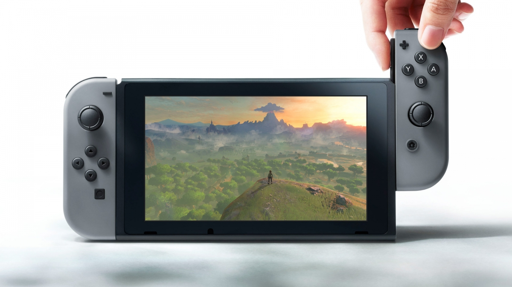

07.10.2020
Новая приставка-гибрид от компании Nintendo появилась в продаже только сегодня, 3 марта, но мы уже успели ее опробовать... в том числе и на зуб! И сейчас расскажем вам обо всем, что нужно знать перед покупкой Nintendo Switch.
В большой симпатичной коробке мы нашли док-станцию, контроллеры Joy-Con с держателями для них, блок питания, HDMI-кабель, саму Nintendo Switch и инструкцию для всего этого.
Это стандартный набор, но можно докупить еще много интересного: контроллер Nintendo Switch Pro (во многом похож на геймпад для Xbox One), подзаряжающий держатель Joy-Con, чехол с защитной пленкой и дополнительные джойконы. И напоминаем, что в базовой комплектации картриджей с играми нет.
Что представляет собой консоль? Сенсорный экранчик, пазы под контроллеры справа и слева от него, несколько разъемов на верхней и нижней гранях. Сверху вы найдете кнопку POWER, регуляторы громкости, стандартный разъем для аудио и слот для картриджей, снизу — гнездо для зарядки. Также консоль оснащена динамиками. На задней панели есть место под карты памяти и выдвижная подставка, благодаря которой вам не придется все время держать Switch в руках. От себя добавим, что консоль прекрасно фиксируется в вертикальном положении: ножка не скользит и не дает экрану упасть. И даже если вы случайно отсоедините ее от самой Switch, не переживайте — так и задумано. Чтобы подставка не сломалась раньше времени, Nintendo сделала так, чтобы она «отстегивалась» при излишнем давлении.
Сердце Switch — чип NVIDIA Tegra. На разных версиях такой системы работают некоторые смартфоны, планшеты и консоли (внутри Ouya, к примеру, стоит Tegra 3). Какую версию Tegra установили в Switch, мы не знаем — как утверждают представители Nintendo, чип «разработан под заказ». Однако ждать от консоли великих графических свершений не следует, ведь по сути центральный и графический процессор Switch — система, созданная для мобильных устройств. Однако мощности консоли с лихвой хватит, чтобы вывести достойную картинку на емкостный экран размером 6,2 дюйма с разрешением 1280x720 точек. Работу экрана и самого устройства поддерживает литий-ионная батарея емкостью 4310 мА∙ч. Издатель заверяет, что играть без подзарядки можно около пяти часов, и в это можно поверить. Если батарею понадобится заменить, предстоит обратиться в сервисный центр Nintendo, своими силами аккумулятор из консоли не извлечь.
Стандартный объем памяти — 32 ГБ. Немного, если учесть, что некоторые цифровые версии игр займут несколько десятков гигабайт. Хорошо, что объем доступной памяти можно увеличить с помощью карточек формата micro-SD, micro-SDHC и micro-SDXC. Из вариантов беспроводной связи наличествуют Wi-Fi и Bluetooth 4.1. Подключить интернет-кабель даже к док-станции не получится, зато можно использовать LAN-адаптер — USB-портов на той же док-станции хватает. Еще в Nintendo Switch нашлось место акселерометру, гироскопу и сенсору яркости. Не исключено, что последний разработчики в будущем научатся использовать в своих играх.
Контроллеры Joy-Con — это два небольших пульта с кнопками, рычажками и стиками. Управление для правой и левой руки разительно отличается. Обусловлено это тем, что левый контроллер отвечает в основном за передвижение, а правый — за удары, прыжки, ускорение и поворот камеры. Слева же вы найдете отдельную кнопку для создания скриншотов, а справа — кнопку HOME, она из любой игры перенесет вас в меню. Джойконы, напоминаем, способны захватывать движение рук, что удобно, например, во время прицеливания.
Ну а самое незамысловатое расположение джойконов — конечно, по бокам от консоли. И не бойтесь, что они будут выскакивать. Контроллеры крепко-накрепко схватываются в каждом из предусмотренных фиксаторов. И, чтобы достать их, придется зажимать едва заметные кнопочки с обратной стороны пультов. Ни у кого из нас, признаться, не получилось проделать это с первого раза. Обнадеживает, но немного раздражает.